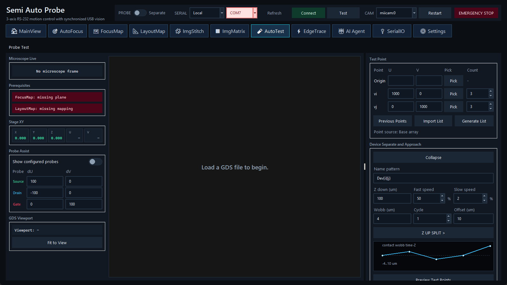

两种互斥页面。Settings 中由 Admin 启用 Wire-bond Test 后，AutoTest 页显示 Mapping 工作区；关闭时显示本主题的 Probe Test。两种模式共享 Measurement Workflow。
前置条件
- FocusMap：提供测试点的表面 Z；状态卡必须 Ready。
- LayoutMap：把 GDS 设备坐标转换为载台坐标；mapping 与当前样品一致。
- Serial、相机与所需 VISA/DP100 仪器已准备，Probe 初始为 Separate。
- 先在 Config Measure Flow 中完成 Workflow v2 校验；检查所有电气限值和输出关闭路径。
Test Point
点位可从 Previous、Import 或 Generate 获取。Generate AutoTest Point List 支持内/外 basis、行列计数、name pattern、预览、保存 JSON/List 和 Direct Import。导入后核对设备名、U/V、顺序与 GDS overlay。
Device Separate and Approach
接近参数包括 down margin、fast/slow 步长、settle、wobble/cycle/offset 与 Z-up split 等。它们控制从安全位置接近和离开样品的运动。第一次样品应使用少量点和保守步长，现场观察完整的 separate→approach→measurement→retract 周期。
Measurement Workflow
Config Measure Flow 打开当前正式的图工作流编辑器。节点通过控制线确定执行顺序，通过数据线传递标量或曲线。运行前执行 Validate，确认 start、必需参数、类型和终止路径；节点清单见 测量节点与仪器。
执行
- 核对 prerequisites、点数、预测运行时间、workflow 摘要和所有仪器连接。
- 保持输出关闭，先用单点/最小参数完成 dry commissioning。
- 单击 Run。观察 Microscope、Coordinates、GDS、progress 和独立 plot windows。
- 错误或风险时按 Stop；它在当前阻塞调用返回后退出，不自动抬到 safe Z。紧急情况使用顶栏急停并另行关闭外部仪器输出。
- 完成后检查 completed point 数、失败节点、输出 JSON/CSV/图像与 workflow plot 证据。正常完成也不会统一回原点或 safe Z，载台通常停在最后一点的接触/offset 位置。
会话输出
每次运行创建 autotest_session/YYYYMMDD_HHMMSS[_NN]/，可含 images/、iv/、wobb/、hp6614c/、b1500/、节点 execution JSON 和 workflow_plots/。不同节点的详细文件名见 文件、会话与导出。
相关主题：Workflow v2 · Wire-bond Mapping · 用 Agent 检查/运行